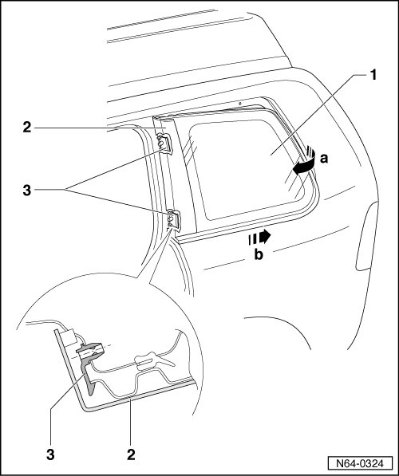

Side Window
Bolted Windows
Side Window
Removing

- Remove headliner.
- Remove all 8 hex nuts.
- Lift side window - 1 - from back - arrow a - out of bolt holes.
- Press entire window backward - arrow b - so that trim - 2 - can be separated from both clamps - 3 -.
Installation
- Install side window in window opening.
- Start the hex nuts.
- Carefully press trim into clamps. Trim engages audibly.
- Tighten hex nuts to 4.5 Nm.